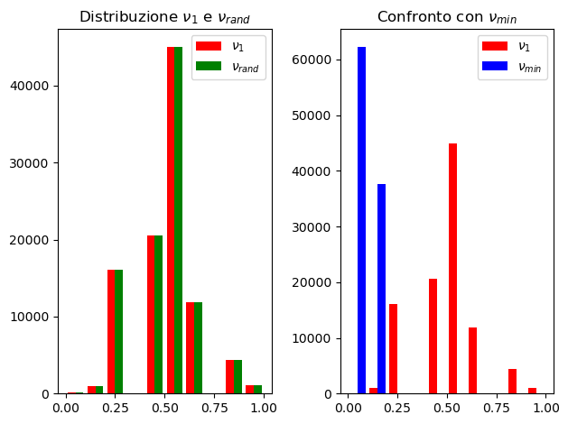
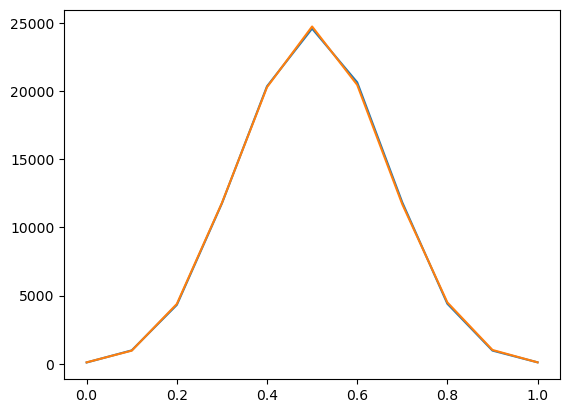
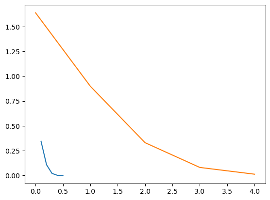

Esercizio di Machine Learning#
Questo esercizio è tratto dal libro di MacKay.
import numpy as np
import matplotlib.pyplot as plt
import pandas as pd
from matplotlib import colors
from matplotlib.ticker import PercentFormatter
No Bottleneck unit testing available.
genCas = np.random.default_rng()
def esperimento(monete=1000,lanci=10):
c = genCas.integers(low=0,high=2,size=(monete,lanci))
n_rand = genCas.integers(0,1000,1)[0]
h = np.zeros(1000)
for i in range(1000):
h[i] = c[i].sum()
return([h[1]/10,h[n_rand]/10,h.min()/10])
def ripeti_esperimento(num=100000):
nu_1 = []
nu_rand = []
nu_min = []
for i in range(num):
[a,b,c] = esperimento()
nu_1.append(a)
nu_rand.append(b)
nu_min.append(c)
df = pd.DataFrame({'nu_1': nu_1,'nu_rand': nu_rand, 'nu_min': nu_min})
return(df)
df = ripeti_esperimento()
---------------------------------------------------------------------------
KeyboardInterrupt Traceback (most recent call last)
<ipython-input-5-52007366c257> in <module>
----> 1 df = ripeti_esperimento()
<ipython-input-4-f3c5cb56acce> in ripeti_esperimento(num)
6
7 for i in range(num):
----> 8 [a,b,c] = esperimento()
9 nu_1.append(a)
10 nu_rand.append(b)
<ipython-input-3-557db0c05c4f> in esperimento(monete, lanci)
7
8 for i in range(1000):
----> 9 h[i] = c[i].sum()
10
11
~/.local/lib/python3.9/site-packages/numpy/core/_methods.py in _sum(a, axis, dtype, out, keepdims, initial, where)
47 def _sum(a, axis=None, dtype=None, out=None, keepdims=False,
48 initial=_NoValue, where=True):
---> 49 return umr_sum(a, axis, dtype, out, keepdims, initial, where)
50
51 def _prod(a, axis=None, dtype=None, out=None, keepdims=False,
KeyboardInterrupt:
fig, (ax0,ax1) = plt.subplots(1,2,tight_layout=True)
n_bins = 10
colors_1 = ['red', 'green']
N, bins, patches = ax0.hist(df[['nu_1','nu_rand']], bins=n_bins, density=False, histtype='bar', color=colors_1, label=[r'$\nu_1$',r'$\nu_{rand}$'])
ax0.legend(prop={'size': 10})
ax0.set_title(r'Distribuzione $\nu_1$ e $\nu_{rand}$');
colors_2 = ['red', 'blue']
ax1.hist(df[['nu_1','nu_min']], bins=n_bins, density=False, histtype='bar', color=colors_2, label=[r'$\nu_1$',r'$\nu_{min}$'])
ax1.legend(prop={'size': 10})
ax1.set_title(r'Confronto con $\nu_{min}$');

mu = 0.5
df['nu_1'].mean()
0.500682
x = np.linspace(0,1,11)
x
array([0. , 0.1, 0.2, 0.3, 0.4, 0.5, 0.6, 0.7, 0.8, 0.9, 1. ])
y1 = df.groupby('nu_1')['nu_1'].count()
y2 = df.groupby('nu_rand')['nu_rand'].count()
y3 = df.groupby('nu_min')['nu_min'].count()
plt.plot(x,y1,y2);

def calcola_P(mu=0.5,eps=0.1):
s = 0
num = 100000
for i in range(len(df['nu_1'])):
if (abs(df['nu_1'][i]-mu) > eps):
s = s + 1
return(s/num)
toll = np.linspace(0.1,0.5,5)
n_train = 10
p_scarti = []
hoeff = []
for eps in toll:
p = calcola_P(eps=eps)
p_scarti.append(p)
q = 2 * np.e **(-2*(eps**2)*n_train)
hoeff.append(q)
p_scarti
[0.34445, 0.10856, 0.02142, 0.00196, 0.0]
hoeff
[1.6374615061559636,
0.8986579282344431,
0.33059777644317295,
0.0815244079567324,
0.013475893998170937]
plt.plot(toll,p_scarti,hoeff);

x_1 = np.linspace(0,1,1000)
plt.plot(x,2 * np.e **(-2*(x**2)*n_train));
plt.plot(np.linspace(0.1,0.5,5),p_scarti)
[<matplotlib.lines.Line2D at 0x7fb6e2a4f130>]